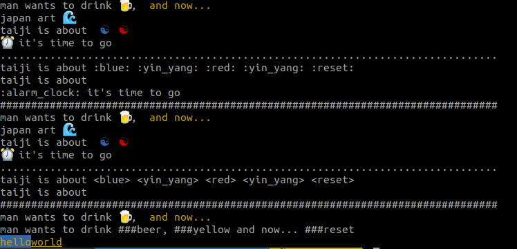

打印
from termcc.cc import cc, dd, clean from termcc.core import ccc, yellow, reset, blue_, rblue_ if __name__ == '__main__': print(cc(":reset:")) print(cc('man wants to drink :beer:, :yellow: and now... :reset:')) print(cc('japan art :water_wave:')) print(cc('taiji is about :blue: :yin_yang: :red: :yin_yang: :reset:')) print(cc(":alarm_clock: it's time to go")) print('.'*80) print(dd(cc('taiji is about :blue: :yin_yang: :red: :yin_yang: :reset:'))) print(clean(dd(cc('taiji is about :blue: :yin_yang: :red: :yin_yang: :reset:')))) print(dd("⏰ it's time to go")) print('#'*80) print(cc('man wants to drink <beer>, <yellow> and now... <reset>', delimiters=('<','>'))) print(cc('japan art <water_wave>', delimiters=('<','>'))) print(cc('taiji is about <blue> <yin_yang> <red> <yin_yang> <reset>', delimiters=('<','>'))) print(cc("<alarm_clock> it's time to go", delimiters=('<','>'))) print('.'*80) print(dd(cc('taiji is about <blue> <yin_yang> <red> <yin_yang> <reset>', delimiters=('<', '>')), delimiters=('<', '>'))) print(clean(dd(cc('taiji is about <blue> <yin_yang> <red> <yin_yang> <reset>', delimiters=('<', '>')), delimiters=('<', '>')), delimiters=('<', '>'))) print('#'*80) print(cc('man wants to drink ###beer, ###yellow and now... ###reset', delimiters=('###',''))) print(dd(cc('man wants to drink ###beer, ###yellow and now... ###reset', delimiters=('###', '')), delimiters=('###', ''))) # print(cc('japan art <water_wave>', delimiters=('<','>'))) print(yellow()+blue_()+"hello"+rblue_()+"world")
运行效果类似
